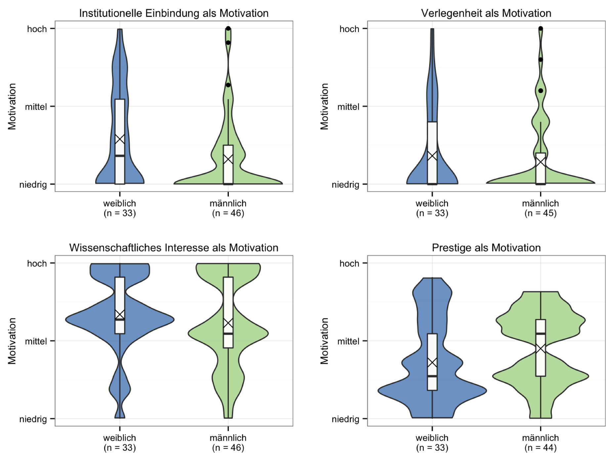

Quelle: Universität Graz (Hg.) (2010): Zahlen, Fakten, Analysen. Chancengleichheit an der Uni Graz. Graz.
Generationeneffekte
Quelle: Universität Graz (Hg.) (2010): Zahlen, Fakten, Analysen. Chancengleichheit an der Uni Graz. Graz.
Quelle: Universität Graz (Hg.) (2010): Zahlen, Fakten, Analysen. Chancengleichheit an der Uni Graz. Graz.
Karriereverläufe
Quelle: Universität Graz (Hg.) (2014): Zahlen, Fakten, Analysen. Chancengleichheit an der Uni Graz. Graz.
Forschungsstand
Illusio
Familienplanung
Netzwerke
Role-Models
Ablauf der Studie
Ablauf
Quantitative Erhebung
Fragebogen
Dateneingabe
Auswertung
Qualitative Erhebung
Leitfaden
Transkription
Auswertung
Bericht
Tätigkeiten
Fragebogenerstellung
Aufgabenteilung
Faktorenanalysen und Grafiken
Endbericht
Ergebnisse
Studienmotivation

MentorInnen I
MentorInnen II
„Und ich glaube wenn ich nicht von ihr [Anm.: der Mentorin] zwischendurch so die massive Unterstützung gehabt hätte, hätte ich es vielleicht auch wieder verworfen.“ (Etablierte Akteurin)
Role-Models
„Es sollten halt keine extremen Vorbilder sein wo man sich denkt: Das will ich auf keinen Fall.“ (Junge Nachwuchswissenschaftlerin)
„Ich merke an unserer Fakultät, zu mindestens, es tut gut, dass wir jetzt mehr Frauen berufen haben. Und vor allem auch Frauen, die selber erfolgreich gezeigt haben, dass Familie und Wissenschaft vereinbar ist.“ (Junge Nachwuchswissenschaftlerin)
Entweder - Oder
“Aber mir tut das eigentlich gut! Zu sehen dass eine junge Frau eine Chance hat und trotzdem zweifache Mutter ist.” (Doktorandin)
“Ich weiß, dass ich gewisse Preise nicht bereit bin zu zahlen, um in der Wissenschaft zu bleiben. […] ich wäre auch nicht bereit Familienplanung oder derartige Dinge aufzugeben um die große Karriere in der Wissenschaft zu starten sozusagen.” (Doktorandin)